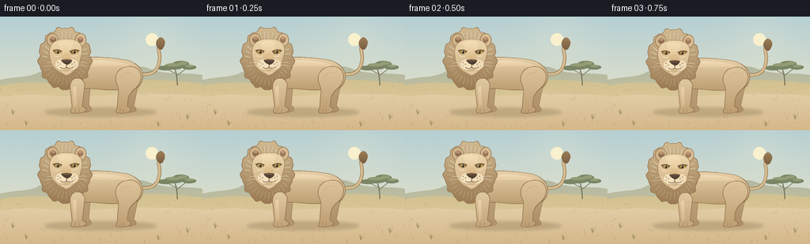
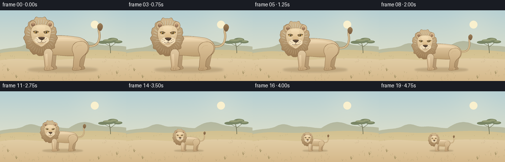

CODING AGENTS AS PIXEL WORLD MODELS
traex/GPT-6.1-Sol · instance_preservation_0052
点击播放 · 原生 RGB 像素
逐轮保存的候选
回放视频、检查图与代码变化。
每份候选均可单独播放。实际图片检查记录在下方工具轨迹中。
候选 01播放与检查图
点击播放 · 原生 RGB 像素


展开代码变化
--- 上一保存版本
+++ 本次保存版本
@@ -0,0 +1,208 @@
+from pathlib import Path
+import math
+import numpy as np
+from PIL import Image, ImageDraw, ImageFilter
+from artifact_io import save
+
+ROOT = Path(__file__).parent
+S = 4
+W, H = 256, 144
+rng = np.random.default_rng(170)
+
+
+def bezier_path(commands):
+ points=[]
+ current=None
+ for cmd in commands:
+ if cmd[0]=='M':
+ current=np.array(cmd[1:],dtype=float); points.append(tuple(current))
+ elif cmd[0]=='L':
+ current=np.array(cmd[1:],dtype=float); points.append(tuple(current))
+ elif cmd[0]=='C':
+ p0=current.copy(); p1=np.array(cmd[1:3]); p2=np.array(cmd[3:5]); p3=np.array(cmd[5:7])
+ for t in np.linspace(0,1,28)[1:]:
+ p=(1-t)**3*p0+3*(1-t)**2*t*p1+3*(1-t)*t*t*p2+t**3*p3
+ points.append(tuple(p))
+ current=p3
+ elif cmd[0]=='Q':
+ p0=current.copy(); p1=np.array(cmd[1:3]); p2=np.array(cmd[3:5])
+ for t in np.linspace(0,1,20)[1:]:
+ p=(1-t)**2*p0+2*(1-t)*t*p1+t*t*p2
+ points.append(tuple(p))
+ current=p2
+ return points
+
+
+def shape(im, commands, top, bottom=None, edge=None, ew=.55):
+ pts=bezier_path(commands)
+ d=ImageDraw.Draw(im)
+ px=[(round(x*S),round(y*S)) for x,y in pts]
+ if bottom is None:
+ d.polygon(px,fill=top)
+ else:
+ mask=Image.new('L',im.size); ImageDraw.Draw(mask).polygon(px,fill=255)
+ yy=np.arange(im.height)[:,None]
+ ymin=min(y for x,y in pts)*S; ymax=max(y for x,y in pts)*S
+ v=np.clip((yy-ymin)/max(ymax-ymin,1),0,1)
+ arr=(np.array(top)[None,None,:]*(1-v[:,:,None])+np.array(bottom)[None,None,:]*v[:,:,None])
+ arr=np.broadcast_to(arr,(im.height,im.width,3)).astype('uint8')
+ im.paste(Image.fromarray(arr).convert('RGBA'),(0,0),mask)
+ if edge:
+ ImageDraw.Draw(im).line(px+[px[0]],fill=edge,width=max(1,round(ew*S)),joint='curve')
+
+
+def line(im, commands, fill, width=1):
+ pts=bezier_path(commands)
+ ImageDraw.Draw(im).line([(round(x*S),round(y*S)) for x,y in pts],fill=fill,width=max(1,round(width*S)),joint='curve')
+
+
+def ellipse(im, box, fill, outline=None, width=.5):
+ ImageDraw.Draw(im).ellipse(tuple(round(x*S) for x in box),fill=fill,outline=outline,width=max(1,round(width*S)))
+
+
+def background():
+ ww,hh=W*S,H*S
+ y=np.linspace(0,1,hh)[:,None,None]
+ top=np.array([181,207,211]); bot=np.array([243,232,199])
+ sky=(top*(1-y)+bot*y)
+ img=np.broadcast_to(sky,(hh,ww,3)).copy()
+ # Soft sun and warm atmospheric haze.
+ yy,xx=np.mgrid[0:hh,0:ww]
+ glow=np.exp(-((xx-194*S)**2+(yy-29*S)**2)/(2*(30*S)**2))[:,:,None]*.14
+ img=img*(1-glow)+np.array([255,245,213])*glow
+ img+=rng.normal(0,.35,(hh,ww,1))
+ im=Image.fromarray(np.clip(img,0,255).astype('uint8')).convert('RGBA')
+ ellipse(im,(184,21,200,37),(249,240,206,255))
+ shape(im,[('M',0,80),('C',23,75,29,78,46,72),('C',68,60,73,73,90,72),('C',109,70,123,75,139,75),('C',157,63,170,59,189,66),('C',214,75,237,70,256,74),('L',256,144),('L',0,144)],(179,184,160),(215,204,163))
+ shape(im,[('M',0,87),('C',43,79,63,87,105,84),('C',153,83,188,76,256,85),('L',256,144),('L',0,144)],(210,193,145),(233,207,162))
+ # Small fixed distant acacia establishes that the camera never zooms.
+ line(im,[('M',224,87),('Q',224,73,220,64)],(111,112,83,255),1.3)
+ line(im,[('M',223,75),('Q',231,69,236,65)],(111,112,83,255),.7)
+ line(im,[('M',222,72),('Q',215,69,211,66)],(111,112,83,255),.7)
+ for box in [(207,60,231,67),(218,56,239,64),(230,61,248,67),(199,62,219,68)]:
+ ellipse(im,box,(121,133,101,255))
+ for box in [(209,59,229,63),(225,57,237,61),(234,61,245,64)]:
+ ellipse(im,box,(148,156,118,255))
+ shape(im,[('M',0,102),('C',40,94,77,104,115,101),('C',161,97,207,97,256,100),('L',256,144),('L',0,144)],(225,205,166),(213,184,138))
+ # Distant and near grass strokes, avoiding clutter around the animal.
+ for _ in range(125):
+ x=rng.uniform(0,256); y=rng.uniform(88,143)
+ if 45<x<207 and 100<y<126: continue
+ h=rng.uniform(1.1,4.5)*(y/144)
+ col=(int(rng.uniform(154,185)),int(rng.uniform(140,164)),107,255)
+ line(im,[('M',x,y),('Q',x-.4,y-h*.65,x+rng.uniform(-1.8,1.8),y-h)],col,.32)
+ for x,y in [(16,124),(237,130),(33,138),(200,139)]:
+ for dx,dy in [(-2,5),(-1,7),(1,6),(3,4)]:
+ line(im,[('M',x,y),('Q',x+dx*.3,y-dy*.7,x+dx,y-dy)],(151,136,90,255),.5)
+ return im
+
+
+def lion_sprite(phase):
+ im=Image.new('RGBA',(204*S,124*S))
+ edge=(143,112,76,255)
+ # Tail behind the body, with a very slight living sway.
+ sway=math.sin(phase)*1.3
+ tail=[('M',150,67),('C',169,72,178,66,180,54),('C',183,42,176,36,181+sway,31)]
+ line(im,tail,(142,110,70,255),4.3)
+ line(im,tail,(214,188,145,255),3.1)
+ shape(im,[('M',179+sway,36),('C',174+sway,30,177+sway,24,182+sway,22),('C',189+sway,25,188+sway,31,184+sway,37),('Q',181+sway,39,179+sway,36)],(157,127,87),(122,94,66),edge,.45)
+ # Far rear leg and far front leg.
+ shape(im,[('M',138,72),('C',153,72,157,77,152,89),('L',148,109),('Q',151,111,151,115),('Q',148,118,137,117),('Q',133,117,135,110),('L',136,88),('L',131,81)],(191,164,124),(172,142,102),edge)
+ shape(im,[('M',82,67),('L',94,71),('L',91,108),('Q',95,111,94,115),('Q',90,118,79,117),('Q',76,115,78,111),('L',78,82)],(191,165,127),(177,147,108),edge)
+ # Long supple torso.
+ shape(im,[('M',73,49),('C',92,46,111,47,133,50),('C',149,51,162,63,159,75),('C',157,88,143,91,132,88),('C',119,90,109,88,93,87),('C',79,88,69,81,65,69),('Q',66,57,73,49)],(231,208,170),(188,158,113),edge,.7)
+ shape(im,[('M',89,52),('C',109,50,138,52,149,61),('C',127,57,110,59,91,59),('Q',86,56,89,52)],(241,220,184),(224,197,156))
+ # Haunch and closest rear leg.
+ shape(im,[('M',145,59),('C',159,61,161,76,151,86),('Q',144,91,141,99),('L',140,110),('Q',145,111,144,115),('Q',141,119,127,118),('Q',124,116,127,112),('L',128,97),('Q',130,88,126,80),('C',122,67,132,58,145,59)],(222,197,155),(190,158,115),edge,.65)
+ line(im,[('M',145,67),('Q',135,65,132,74)],(204,175,133,255),.65)
+ line(im,[('M',131,113),('L',130.5,116)],(146,116,80,255),.55)
+ line(im,[('M',135,113),('L',134.5,117)],(146,116,80,255),.55)
+ # Full mane with irregular soft points instead of a circular disk.
+ mane=[]
+ for i in range(120):
+ a=2*math.pi*i/120
+ wave=1.3*math.sin(a*13)+.7*math.sin(a*23)
+ rx=33+wave; ry=39+wave
+ mane.append((61+rx*math.cos(a),49+ry*math.sin(a)))
+ shape(im,[('M',*mane[0])]+[('L',*p) for p in mane[1:]],(210,185,144),(154,122,83),edge,.65)
+ # Layered mane wisps in a consistent beige palette.
+ for i in range(33):
+ a=i*2*math.pi/33
+ xx=61+29*math.cos(a); yy=49+34*math.sin(a)
+ xx2=61+22*math.cos(a-.035); yy2=49+25*math.sin(a-.035)
+ col=(230,207,167,130) if math.sin(a)<0 else (181,148,105,180)
+ line(im,[('M',xx,yy),('Q',(xx+xx2)/2+1,(yy+yy2)/2,xx2,yy2)],col,.7)
+ # Foreleg in front of the mane lower edge.
+ shape(im,[('M',72,75),('Q',83,71,86,82),('L',83,110),('Q',88,111,88,115),('Q',83,119,70,118),('Q',67,116,70,111),('L',68,91),('Q',66,79,72,75)],(224,201,163),(195,163,120),edge,.65)
+ shape(im,[('M',71,85),('L',75,84),('L',76,108),('L',72,111)],(235,211,172),(211,181,139))
+ line(im,[('M',74,113),('L',73.5,116.5)],(151,118,81,255),.55)
+ line(im,[('M',79,113),('L',78.5,117)],(151,118,81,255),.55)
+ # Ears with dark rounded interiors.
+ ellipse(im,(38,17,53,34),(208,180,138,255),edge,.7)
+ ellipse(im,(74,17,88,34),(216,189,147,255),edge,.7)
+ ellipse(im,(42,21,50,29),(144,110,83,255))
+ ellipse(im,(77,21,84,29),(155,121,92,255))
+ ellipse(im,(43,21,49,25),(183,146,112,255))
+ ellipse(im,(78,21,83,25),(190,151,115,255))
+ # Face: lion's broad brow, cheek taper, heavy muzzle.
+ shape(im,[('M',46,29),('C',52,23,72,22,79,29),('C',85,35,82,44,80,51),('Q',77,64,65,70),('Q',52,68,46,59),('C',41,49,39,37,46,29)],(237,214,173),(207,178,134),edge,.55)
+ shape(im,[('M',52,29),('Q',61,25,71,29),('L',69,43),('Q',63,49,57,43)],(244,223,184),(228,197,151))
+ # Eyes are amber, with dark upper lids and light lower lids.
+ shape(im,[('M',46,39),('Q',52,35.7,57,40),('Q',53,45,48,42)],(123,99,66))
+ shape(im,[('M',67,40),('Q',74,35.7,79,39),('Q',76,44,69,43)],(123,99,66))
+ ellipse(im,(48,38.5,55,42.5),(189,149,77,255))
+ ellipse(im,(70,38.5,77,42.5),(189,149,77,255))
+ ellipse(im,(51,38.5,53.3,42.8),(48,43,32,255))
+ ellipse(im,(72,38.5,74.3,42.8),(48,43,32,255))
+ ellipse(im,(51.1,39,52,40),(255,246,217,255))
+ ellipse(im,(72.2,39,73.1,40),(255,246,217,255))
+ line(im,[('M',46,38.8),('Q',52,36.8,57,39.8)],(94,76,53,255),.9)
+ line(im,[('M',67,39.8),('Q',73,36.8,79,38.8)],(94,76,53,255),.9)
+ line(im,[('M',47,45),('Q',50,47,54,46)],(243,219,179,255),1)
+ line(im,[('M',70,46),('Q',74,47,77,44)],(243,219,179,255),1)
+ # Bridge of the nose and pale whisker pads.
+ shape(im,[('M',58,42),('L',67,42),('L',70,53),('Q',63,57,56,53)],(227,198,149),(211,175,125))
+ ellipse(im,(49,50,65,63),(244,225,190,255))
+ ellipse(im,(62,50,78,63),(241,220,183,255))
+ shape(im,[('M',56,51),('Q',63,49,70,51),('Q',69,55,64,57),('Q',58,55,56,51)],(102,80,61),(69,55,44),None)
+ line(im,[('M',59,51.3),('Q',63,50.7,67,51.4)],(151,113,86,255),.6)
+ line(im,[('M',63,56),('L',63,60),('Q',59,63,55,60)],(109,83,62,255),.7)
+ line(im,[('M',63,60),('Q',67,63,72,59.5)],(109,83,62,255),.7)
+ shape(im,[('M',56,64),('Q',63,68,70,63),('Q',66,70,62,70),('Q',58,68,56,64)],(238,218,183),(217,189,149))
+ for x,y in [(52,54),(55,56),(52,58),(73,54),(70,56),(74,58)]:
+ ellipse(im,(x-.42,y-.42,x+.42,y+.42),(126,100,73,255))
+ for cmd in [ [('M',54,56),('Q',44,53,38,55)], [('M',54,58),('Q',43,57,36,60)], [('M',72,56),('Q',82,53,87,54)], [('M',72,58),('Q',83,56,90,59)] ]:
+ line(im,cmd,(239,220,189,210),.4)
+ return im
+
+
+def generate():
+ bg=background()
+ frames=[]
+ for i in range(20):
+ t=i/19
+ # Hold endpoints briefly. Scaling around the paws shows actual shrinking,
+ # not a dolly or a receding walk. All proportions and face identity persist.
+ u=np.clip((t-.08)/.84,0,1)
+ ease=u*u*(3-2*u)
+ scale=1-.66*ease
+ im=bg.copy()
+ shadow=Image.new('RGBA',im.size)
+ sd=ImageDraw.Draw(shadow)
+ cx=127*S; cy=121*S
+ rx=71*scale*S; ry=5.2*scale*S
+ sd.ellipse((cx-rx,cy-ry,cx+rx,cy+ry),fill=(107,81,44,62))
+ shadow=shadow.filter(ImageFilter.GaussianBlur(2.0*S*max(scale,.5)))
+ im=Image.alpha_composite(im,shadow)
+ lion=lion_sprite(i*.24)
+ nw=round(204*S*scale); nh=round(124*S*scale)
+ lion=lion.resize((nw,nh),Image.Resampling.LANCZOS)
+ # Mid-body remains at the same fixed screen position.
+ x=round(127*S-106*S*scale)
+ y=round(122*S-118*S*scale)
+ im.alpha_composite(lion,(x,y))
+ frames.append(np.asarray(im.convert('RGB').resize((W,H),Image.Resampling.LANCZOS)))
+ save(np.stack(frames).astype(np.uint8),ROOT)
+
+if __name__=='__main__':
+ generate()
可观测工具轨迹
实际执行的命令与返回图片。
命令 1exit 0
/bin/bash -lc 'ls -la && cat prompt.txt && cat GENERATION_RULES.md && cat task_spec.json'
命令 2exit 0
/bin/bash -lc 'cat artifact_io.py'
命令 3exit 0
/bin/bash -lc "cat > generate.py <<'PY'
from pathlib import Path
import math
import numpy as np
from PIL import Image, ImageDraw, ImageFilter
from artifact_io import save
ROOT = Path(__file__).parent
S = 4
W, H = 256, 144
rng = np.random.default_rng(170)
def bezier_path(commands):
points=[]
current=None
for cmd in commands:
if cmd[0]=='M':
current=np.array(cmd[1:],dtype=float); points.append(tuple(current))
elif cmd[0]=='L':
current=np.array(cmd[1:],dtype=float); points.append(tuple(current))
elif cmd[0]=='C':
p0=current.copy(); p1=np.array(cmd[1:3]); p2=np.array(cmd[3:5]); p3=np.array(cmd[5:7])
for t in np.linspace(0,1,28)[1:]:
p=(1-t)**3*p0+3*(1-t)**2*t*p1+3*(1-t)*t*t*p2+t**3*p3
points.append(tuple(p))
current=p3
elif cmd[0]=='Q':
p0=current.copy(); p1=np.array(cmd[1:3]); p2=np.array(cmd[3:5])
for t in np.linspace(0,1,20)[1:]:
p=(1-t)**2*p0+2*(1-t)*t*p1+t*t*p2
points.append(tuple(p))
current=p2
return points
def shape(im, commands, top, bottom=None, edge=None, ew=.55):
pts=bezier_path(commands)
d=ImageDraw.Draw(im)
px=[(round(x*S),round(y*S)) for x,y in pts]
if bottom is None:
d.polygon(px,fill=top)
else:
mask=Image.new('L',im.size); ImageDraw.Draw(mask).polygon(px,fill=255)
yy=np.arange(im.height)[:,None]
ymin=min(y for x,y in pts)*S; ymax=max(y for x,y in pts)*S
v=np.clip((yy-ymin)/max(ymax-ymin,1),0,1)
arr=(np.array(top)[None,None,:]*(1-v[:,:,None])+np.array(bottom)[None,None,:]*v[:,:,None])
arr=np.broadcast_to(arr,(im.height,im.width,3)).astype('uint8')
im.paste(Image.fromarray(arr).convert('RGBA'),(0,0),mask)
if edge:
ImageDraw.Draw(im).line(px+[px[0]],fill=edge,width=max(1,round(ew*S)),joint='curve')
def line(im, commands, fill, width=1):
pts=bezier_path(commands)
ImageDraw.Draw(im).line([(round(x*S),round(y*S)) for x,y in pts],fill=fill,width=max(1,round(width*S)),joint='curve')
def ellipse(im, box, fill, outline=None, width=.5):
ImageDraw.Draw(im).ellipse(tuple(round(x*S) for x in box),fill=fill,outline=outline,width=max(1,round(width*S)))
def background():
ww,hh=W*S,H*S
y=np.linspace(0,1,hh)[:,None,None]
top=np.array([181,207,211]); bot=np.array([243,232,199])
sky=(top*(1-y)+bot*y)
img=np.broadcast_to(sky,(hh,ww,3)).copy()
# Soft sun and warm atmospheric haze.
yy,xx=np.mgrid[0:hh,0:ww]
glow=np.exp(-((xx-194*S)**2+(yy-29*S)**2)/(2*(30*S)**2))[:,:,None]*.14
img=img*(1-glow)+np.array([255,245,213])*glow
img+=rng.normal(0,.35,(hh,ww,1))
im=Image.fromarray(np.clip(img,0,255).astype('uint8')).convert('RGBA')
ellipse(im,(184,21,200,37),(249,240,206,255))
shape(im,[('M',0,80),('C',23,75,29,78,46,72),('C',68,60,73,73,90,72),('C',109,70,123,75,139,75),('C',157,63,170,59,189,66),('C',214,75,237,70,256,74),('L',256,144),('L',0,144)],(179,184,160),(215,204,163))
shape(im,[('M',0,87),('C',43,79,63,87,105,84),('C',153,83,188,76,256,85),('L',256,144),('L',0,144)],(210,193,145),(233,207,162))
# Small fixed distant acacia establishes that the camera never zooms.
line(im,[('M',224,87),('Q',224,73,220,64)],(111,112,83,255),1.3)
line(im,[('M',223,75),('Q',231,69,236,65)],(111,112,83,255),.7)
line(im,[('M',222,72),('Q',215,69,211,66)],(111,112,83,255),.7)
for box in [(207,60,231,67),(218,56,239,64),(230,61,248,67),(199,62,219,68)]:
ellipse(im,box,(121,133,101,255))
for box in [(209,59,229,63),(225,57,237,61),(234,61,245,64)]:
ellipse(im,box,(148,156,118,255))
shape(im,[('M',0,102),('C',40,94,77,104,115,101),('C',161,97,207,97,256,100),('L',256,144),('L',0,144)],(225,205,166),(213,184,138))
# Distant and near grass strokes, avoiding clutter around the animal.
for _ in range(125):
x=rng.uniform(0,256); y=rng.uniform(88,143)
if 45<x<207 and 100<y<126: continue
h=rng.uniform(1.1,4.5)*(y/144)
col=(int(rng.uniform(154,185)),int(rng.uniform(140,164)),107,255)
line(im,[('M',x,y),('Q',x-.4,y-h*.65,x+rng.uniform(-1.8,1.8),y-h)],col,.32)
for x,y in [(16,124),(237,130),(33,138),(200,139)]:
for dx,dy in [(-2,5),(-1,7),(1,6),(3,4)]:
line(im,[('M',x,y),('Q',x+dx*.3,y-dy*.7,x+dx,y-dy)],(151,136,90,255),.5)
return im
def lion_sprite(phase):
im=Image.new('RGBA',(204*S,124*S))
edge=(143,112,76,255)
# Tail behind the body, with a very slight living sway.
sway=math.sin(phase)*1.3
tail=[('M',150,67),('C',169,72,178,66,180,54),('C',183,42,176,36,181+sway,31)]
line(im,tail,(142,110,70,255),4.3)
line(im,tail,(214,188,145,255),3.1)
shape(im,[('M',179+sway,36),('C',174+sway,30,177+sway,24,182+sway,22),('C',189+sway,25,188+sway,31,184+sway,37),('Q',181+sway,39,179+sway,36)],(157,127,87),(122,94,66),edge,.45)
# Far rear leg and far front leg.
shape(im,[('M',138,72),('C',153,72,157,77,152,89),('L',148,109),('Q',151,111,151,115),('Q',148,118,137,117),('Q',133,117,135,110),('L',136,88),('L',131,81)],(191,164,124),(172,142,102),edge)
shape(im,[('M',82,67),('L',94,71),('L',91,108),('Q',95,111,94,115),('Q',90,118,79,117),('Q',76,115,78,111),('L',78,82)],(191,165,127),(177,147,108),edge)
# Long supple torso.
shape(im,[('M',73,49),('C',92,46,111,47,133,50),('C',149,51,162,63,159,75),('C',157,88,143,91,132,88),('C',119,90,109,88,93,87),('C',79,88,69,81,65,69),('Q',66,57,73,49)],(231,208,170),(188,158,113),edge,.7)
shape(im,[('M',89,52),('C',109,50,138,52,149,61),('C',127,57,110,59,91,59),('Q',86,56,89,52)],(241,220,184),(224,197,156))
# Haunch and closest rear leg.
shape(im,[('M',145,59),('C',159,61,161,76,151,86),('Q',144,91,141,99),('L',140,110),('Q',145,111,144,115),('Q',141,119,127,118),('Q',124,116,127,112),('L',128,97),('Q',130,88,126,80),('C',122,67,132,58,145,59)],(222,197,155),(190,158,115),edge,.65)
line(im,[('M',145,67),('Q',135,65,132,74)],(204,175,133,255),.65)
line(im,[('M',131,113),('L',130.5,116)],(146,116,80,255),.55)
line(im,[('M',135,113),('L',134.5,117)],(146,116,80,255),.55)
# Full mane with irregular soft points instead of a circular disk.
mane=[]
for i in range(120):
a=2*math.pi*i/120
wave=1.3*math.sin(a*13)+.7*math.sin(a*23)
rx=33+wave; ry=39+wave
mane.append((61+rx*math.cos(a),49+ry*math.sin(a)))
shape(im,[('M',*mane[0])]+[('L',*p) for p in mane[1:]],(210,185,144),(154,122,83),edge,.65)
# Layered mane wisps in a consistent beige palette.
for i in range(33):
a=i*2*math.pi/33
xx=61+29*math.cos(a); yy=49+34*math.sin(a)
xx2=61+22*math.cos(a-.035); yy2=49+25*math.sin(a-.035)
col=(230,207,167,130) if math.sin(a)<0 else (181,148,105,180)
line(im,[('M',xx,yy),('Q',(xx+xx2)/2+1,(yy+yy2)/2,xx2,yy2)],col,.7)
# Foreleg in front of the mane lower edge.
shape(im,[('M',72,75),('Q',83,71,86,82),('L',83,110),('Q',88,111,88,115),('Q',83,119,70,118),('Q',67,116,70,111),('L',68,91),('Q',66,79,72,75)],(224,201,163),(195,163,120),edge,.65)
shape(im,[('M',71,85),('L',75,84),('L',76,108),('L',72,111)],(235,211,172),(211,181,139))
line(im,[('M',74,113),('L',73.5,116.5)],(151,118,81,255),.55)
line(im,[('M',79,113),('L',78.5,117)],(151,118,81,255),.55)
# Ears with dark rounded interiors.
ellipse(im,(38,17,53,34),(208,180,138,255),edge,.7)
ellipse(im,(74,17,88,34),(216,189,147,255),edge,.7)
ellipse(im,(42,21,50,29),(144,110,83,255))
ellipse(im,(77,21,84,29),(155,121,92,255))
ellipse(im,(43,21,49,25),(183,146,112,255))
ellipse(im,(78,21,83,25),(190,151,115,255))
# Face: lion's broad brow, cheek taper, heavy muzzle.
shape(im,[('M',46,29),('C',52,23,72,22,79,29),('C',85,35,82,44,80,51),('Q',77,64,65,70),('Q',52,68,46,59),('C',41,49,39,37,46,29)],(237,214,173),(207,178,134),edge,.55)
shape(im,[('M',52,29),('Q',61,25,71,29),('L',69,43),('Q',63,49,57,43)],(244,223,184),(228,197,151))
# Eyes are amber, with dark upper lids and light lower lids.
shape(im,[('M',46,39),('Q',52,35.7,57,40),('Q',53,45,48,42)],(123,99,66))
shape(im,[('M',67,40),('Q',74,35.7,79,39),('Q',76,44,69,43)],(123,99,66))
ellipse(im,(48,38.5,55,42.5),(189,149,77,255))
ellipse(im,(70,38.5,77,42.5),(189,149,77,255))
ellipse(im,(51,38.5,53.3,42.8),(48,43,32,255))
ellipse(im,(72,38.5,74.3,42.8),(48,43,32,255))
ellipse(im,(51.1,39,52,40),(255,246,217,255))
ellipse(im,(72.2,39,73.1,40),(255,246,217,255))
line(im,[('M',46,38.8),('Q',52,36.8,57,39.8)],(94,76,53,255),.9)
line(im,[('M',67,39.8),('Q',73,36.8,79,38.8)],(94,76,53,255),.9)
line(im,[('M',47,45),('Q',50,47,54,46)],(243,219,179,255),1)
line(im,[('M',70,46),('Q',74,47,77,44)],(243,219,179,255),1)
# Bridge of the nose and pale whisker pads.
shape(im,[('M',58,42),('L',67,42),('L',70,53),('Q',63,57,56,53)],(227,198,149),(211,175,125))
ellipse(im,(49,50,65,63),(244,225,190,255))
ellipse(im,(62,50,78,63),(241,220,183,255))
shape(im,[('M',56,51),('Q',63,49,70,51),('Q',69,55,64,57),('Q',58,55,56,51)],(102,80,61),(69,55,44),None)
line(im,[('M',59,51.3),('Q',63,50.7,67,51.4)],(151,113,86,255),.6)
line(im,[('M',63,56),('L',63,60),('Q',59,63,55,60)],(109,83,62,255),.7)
line(im,[('M',63,60),('Q',67,63,72,59.5)],(109,83,62,255),.7)
shape(im,[('M',56,64),('Q',63,68,70,63),('Q',66,70,62,70),('Q',58,68,56,64)],(238,218,183),(217,189,149))
for x,y in [(52,54),(55,56),(52,58),(73,54),(70,56),(74,58)]:
ellipse(im,(x-.42,y-.42,x+.42,y+.42),(126,100,73,255))
for cmd in [ [('M',54,56),('Q',44,53,38,55)], [('M',54,58),('Q',43,57,36,60)], [('M',72,56),('Q',82,53,87,54)], [('M',72,58),('Q',83,56,90,59)] ]:
line(im,cmd,(239,220,189,210),.4)
return im
def generate():
bg=background()
frames=[]
for i in range(20):
t=i/19
# Hold endpoints briefly. Scaling around the paws shows actual shrinking,
# not a dolly or a receding walk. All proportions and face identity persist.
u=np.clip((t-.08)/.84,0,1)
ease=u*u*(3-2*u)
scale=1-.66*ease
im=bg.copy()
shadow=Image.new('RGBA',im.size)
sd=ImageDraw.Draw(shadow)
cx=127*S; cy=121*S
rx=71*scale*S; ry=5.2*scale*S
sd.ellipse((cx-rx,cy-ry,cx+rx,cy+ry),fill=(107,81,44,62))
shadow=shadow.filter(ImageFilter.GaussianBlur(2.0*S*max(scale,.5)))
im=Image.alpha_composite(im,shadow)
lion=lion_sprite(i*.24)
nw=round(204*S*scale); nh=round(124*S*scale)
lion=lion.resize((nw,nh),Image.Resampling.LANCZOS)
# Mid-body remains at the same fixed screen position.
x=round(127*S-106*S*scale)
y=round(122*S-118*S*scale)
im.alpha_composite(lion,(x,y))
frames.append(np.asarray(im.convert('RGB').resize((W,H),Image.Resampling.LANCZOS)))
save(np.stack(frames).astype(np.uint8),ROOT)
if __name__=='__main__':
generate()
PY
python generate.py"命令 4exit 0
/bin/bash -lc "ls -lh generate.py pixels.npz index.html inspection.png && python - <<'PY'
import numpy as np
p=np.load('pixels.npz')['pixels']
print('Saved video tensor:',p.shape,p.dtype)
PY"视觉工具实际返回图片 1

保存候选 1 份；完成命令 4 次；可验证图片返回 1 张。原始 API 响应与完整日志保留在本地。